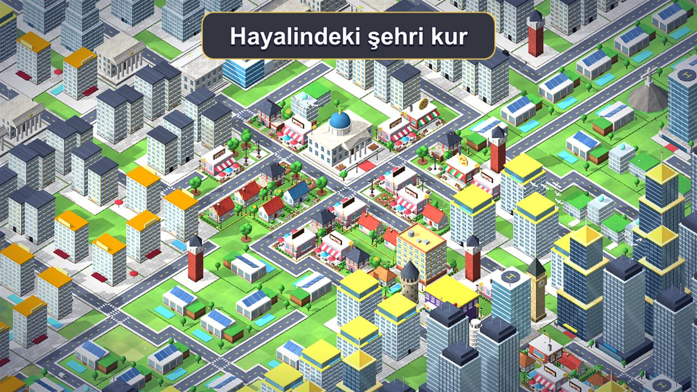
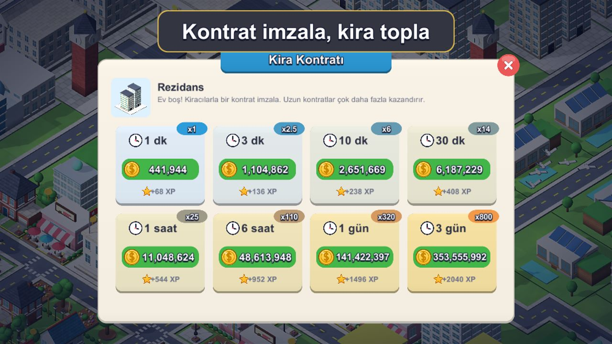
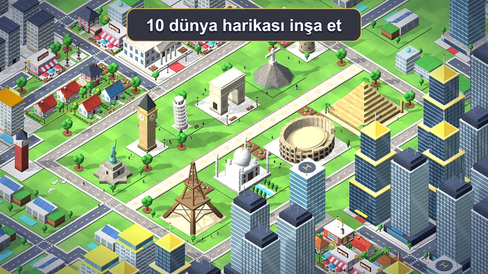

O oyunları eğlenceli yapan neydi?
Basit inşa, her para topladığında gelen tatmin anı ve birkaç evden yavaş yavaş gökdelenlere büyüyen bir şehir. İster iki dakika ister bütün akşam oynardın; geri dönmek için her zaman bir sebep vardı.
2010'lu yıllarda Millionaire City, CityVille ve SimCity Social gibi Facebook'taki sosyal şehir kurma oyunlarını milyonlarca kişi oynuyordu. Bir kasaba kurar, evlerinden para toplar, araziyi genişletir ve her köşeyi süslerdin. Bu oyunların birçoğu artık oynanamıyor, ama verdikleri his hâlâ akıllarda. Money City, o oyun tarzını özleyenler için yapılmış yeni ve özgün bir oyun.
Google Play'den indir
Basit inşa, her para topladığında gelen tatmin anı ve birkaç evden yavaş yavaş gökdelenlere büyüyen bir şehir. İster iki dakika ister bütün akşam oynardın; geri dönmek için her zaman bir sebep vardı.
Money City, Android için rahatlatıcı bir şehir kurma ve zengin olma oyunu. Evler kurar, 1 dakikadan 3 güne kadar kira kontratları imzalar, kirayı tek dokunuşla toplar ve küçük bir köyü megakente dönüştürürsün. Beş bölgeli bir adada yeni araziler satın alır, binaları 5 yıldıza yükseltir, parklar ve heykellerle süsler, gelirini artıran 10 dünya harikası inşa edersin.
Money City tek oyunculu ve internetsiz oynanır. Facebook hesabına, istek gönderecek arkadaşlara ya da internet bağlantısına ihtiyacın yok. Reklamlar isteğe bağlı: yalnızca bonus istediğinde izlersin. Oyun 12 dilde ve telefonunun diliyle açılır.



Hayır. Money City bağımsız bir geliştiricinin yaptığı özgün bir oyundur. Bu oyunlarla ya da sahipleriyle hiçbir bağlantısı, ortaklığı veya onayı yoktur.
Şehir kurup binalarından kira toplamanın aynı rahatlatıcı fikrini paylaşır; buna internetsiz oyun, kira kontratları, beş bölge ve dünya harikaları gibi modern mobil özellikler ekler.
Hayır. Money City tek oyunculu bir oyundur. Tek başına ve internetsiz oynayabilirsin.
Money City, Android için Google Play'de.
Millionaire City, CityVille ve SimCity Social ilgili sahiplerinin markalarıdır. Yalnızca bir oyun tarzını tanımlamak için anılmıştır. Money City bu oyunlarla veya sahipleriyle bağlantılı değildir ve onlar tarafından onaylanmamıştır.